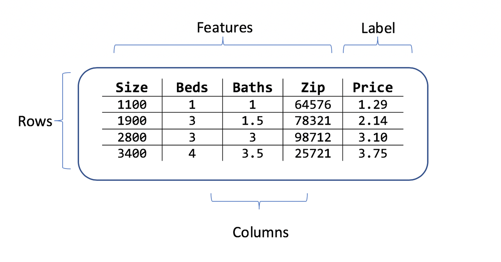

Introduction to Big Data Analytics
Chapter 8: Machine Learning with Spark
Xingang (Ian) Fang
Outline
Introduction to Machine Learning
Machine Learning with Spark
MLlib
Spark ML
{kind=link}
Introduction to Machine Learning
Machine learning is the science of training a system to learn from data and act.
Key components of machine learning:
Data: The raw material that the system learns from.
Model: The system that learns from the data.
How to develop a machine learning model:
Data Preparation: Convert data from original to final format.
Model: Choose a model and train it on the data.
Evaluation: Evaluate the model on unseen data.
Prediction: Use the model to make predictions on new data.
Data in Machine Learning
Original format: two-dimensional table of many different types of data
Final format: two-dimensional table of numerical values
Preparation
Feature: column in the table
Record/observation: row in the table
as a vector of numerical values (features only)
as a vector of numerical values (features with the last column treated as a label)
as a vector-value pair (features and label)
Label (class label)
the special column we want to learn and predict
only used in supervised learning
Data in Machine Learning Example
{kind=link}
Data Preparation
Objective: convert from original to final format that is ready for the model
encoding: non-numerical features as numerical values
Categorical features: one-hot encoding
transformation: optimize features
scaling: change the range of features
selection: choose the most important features
extraction: create new features from existing ones
split: divide data into multiple sets
training set: used to train the model
validation set: used to tune and optimize the model
test set: used to evaluate the final model
Model in Machine Learning
Objectives:
classification: predict a categorical label
regression: predict a numerical value
clustering: group similar records
anomaly detection: detect unusual records
recommendation: suggest items to users
dimension reduction: reduce the number of features
Types of models:
supervised: learn from labeled data
unsupervised: learn from unlabeled data
semi-supervised: learn from a small amount of labeled data and a large amount of unlabeled data
reinforcement: learn from feedback
Model Development Process
Steps:
choose a model
train the model (use training set)
evaluate the model (use validation set)
tune and optimize the model (use validation set)
repeat all above steps until the model is satisfactory
final evaluation of the model (use test dataset)
Cross validation: rotate training and validation sets from the same dataset
Evaluation metrics:
classification: accuracy, precision, recall, F1 score, ROC curve, ROC AUC
regression: mean squared error, mean absolute error, R-squared
Machine Learning with Spark
In reality: not that useful
Traditional models do not need large datasets
Models are too simple to learn from large datasets
Use spark to process data to a size that fits in memory
Use traditional machine learning libraries to develop models
Deep learning models need large datasets but Spark does not support them
Components: MLlib
Spark ML merged into MLLib as its primary API now
Old MLlib is now known as RDD-based API in MLlib
MLlib RDD API
Original machine learning library in Spark
Operates on RDDs
MLlib API
Data types: Vector, SparseVector, LabeledPoint, Rating
Models (algorithms)
classification
regression
clustering
recommendation
Metrics
Regression
Classification: binary, multiclass and multilabel
Recommendation
MLlib DataFrame API
New machine learning library in Spark
Higher-level and more user-friendly than RDD ML API
Operates on DataFrames
Spark ML API
ML dataset
Transformer
Estimator
Pipeline: chain of Transformers and Estimators
Evaluator
Grid search
CrossValidator